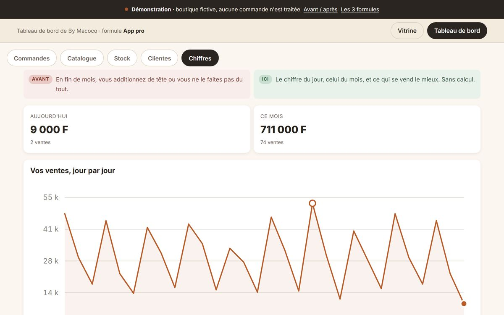
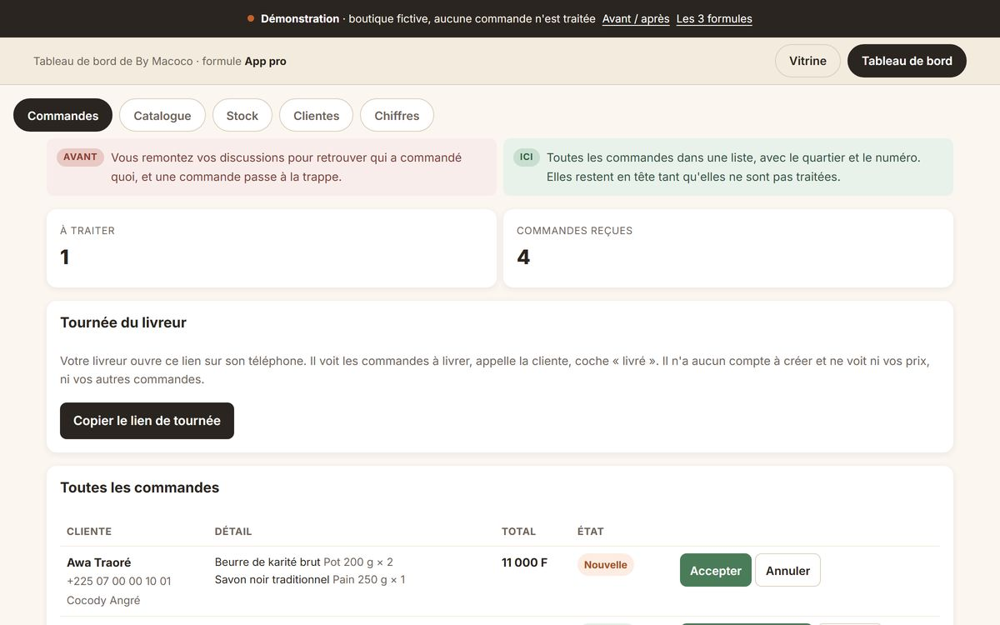

01 · LA VITRINE
Ce que les gens voient quand ils te cherchent
Un site à ton nom, lisible sur un téléphone, qui dit ce que tu fais et pour qui. Pas un catalogue de pages : ce qu'il faut pour qu'on te comprenne et qu'on te contacte.
Ton Poste de Pilotage
Ta vitrine, tes rendez-vous, tes relances et tes chiffres, au même endroit. Construit sur mesure, livré en ligne, et il t'appartient.
Offre séparée du coaching, facturée séparément. Tu n'as pas besoin d'avoir fait l'un pour demander l'autre.
Le moment où ça bloque
Tu sais où tu vas. Tu l'as écrit, peut-être même mis au propre. Et depuis, il attend, parce qu'il n'existe nulle part ailleurs que dans un fichier.
Pendant ce temps, tes rendez-vous se prennent par messages, tes relances dépendent de ce que tu penses à faire, et tes chiffres sont éparpillés entre ta tête, un carnet et trois conversations.
Ce n'est pas un problème de motivation. C'est qu'aucun outil ne travaille pendant que tu fais autre chose.
Tu restes le pilote. Le poste de pilotage, ce sont les instruments.
Ce qu'il y a dedans
Personne n'a besoin des quatre le premier jour. On regarde ensemble où ça coince vraiment, et on commence par là.
01 · LA VITRINE
Un site à ton nom, lisible sur un téléphone, qui dit ce que tu fais et pour qui. Pas un catalogue de pages : ce qu'il faut pour qu'on te comprenne et qu'on te contacte.
02 · LES RENDEZ-VOUS
Un formulaire qui qualifie avant l'appel, ou un créneau qui se réserve. Tu arrives à la conversation en sachant déjà à qui tu parles et pourquoi.
03 · LES RELANCES
Le message de confirmation, le rappel avant la séance, la relance du devis resté sans réponse. Ce sont les tâches qu'on oublie toujours, et qui coûtent le plus cher.
04 · LES CHIFFRES
Un tableau de bord qui répond à trois questions : combien sont venus, combien ont signé, combien il reste à encaisser. Trois chiffres, pas trente.
Regarde par toi-même
Ce n'est pas une copie d'écran arrangée. C'est une démonstration en ligne, sur une boutique fictive, que tu peux manipuler sans rien casser et sans créer de compte.

Les chiffres · démonstrationLe chiffre du jour, celui du mois, et la courbe

Les commandes · démonstrationCe qui est à traiter, et ce qui est déjà parti
Aucune donnée réelle n'est exposée, et c'est écrit en haut de l'écran. Les noms, les numéros et les montants sont inventés. Ce que tu vois fonctionner est l'outil, pas l'activité de quelqu'un d'autre.
Ce qui existe déjà
Chacune tourne aujourd'hui, sur le domaine de la personne à qui elle appartient. Tu peux les ouvrir.
 Nabycook · Paris
Nabycook · Paris
Marque, association et site
 Ayêla · Abidjan
Ayêla · Abidjan
Vitrine, commandes et tableau de bord
 Vies Croisées · en ligne
Vies Croisées · en ligne
Média, épisodes et abonnés
latiss.net est l'espace des fans d'un artiste, en production sur son propre domaine : inscription, fil d'actualité, notifications, parrainage.
Elle coûte onze dollars par an à faire tourner. C'est le genre de chiffre qu'on ne connaît que si on l'a construite soi-même.
Comment ça se passe
Ce que ce n'est pas
J'ai payé une structure pour un site qui ne m'a envoyé ni client ni prospect. Je n'ai pas pu en sortir, et ça s'est terminé devant un huissier. C'est de là que vient ma façon de travailler.
Tu ne loues pas ton propre site. Ce qui est construit t'appartient, et tu peux partir avec du jour au lendemain.
Un outil ne vend pas à ta place. Il enlève les frottements et il te rend du temps. Ce que tu en fais reste ton travail.
Questions fréquentes
Non. Ce sont deux offres séparées, facturées séparément. Certains arrivent directement ici parce qu'ils savent déjà ce qu'ils veulent montrer. D'autres passent par le coaching d'abord parce que ce n'est pas encore clair. Les deux marchent.
Non. Un site montre. Un poste de pilotage fait travailler : il prend les rendez-vous, il relance, il enregistre, et il te dit où tu en es. La vitrine est la partie visible, elle n'est pas la totalité.
Cela dépend de ce qu'on met dedans. Une vitrine avec prise de rendez-vous se livre en quelques semaines. Un tableau de bord avec des données métier demande plus, parce qu'il faut d'abord regarder comment tu travailles vraiment.
Le calendrier est posé par écrit avant de commencer, et tu vois avancer en cours de route plutôt que de découvrir à la fin.
Toi. Le nom de domaine est à ton nom, les données sont les tiennes, et tu peux partir avec.
J'ai vécu l'inverse : un site loué qui ne m'a jamais rapporté un client et dont je n'ai pas pu sortir. Je ne le ferai à personne.
Tu gardes la main. Ce qui se modifie souvent se modifie depuis ton espace, sans moi et sans facture.
Pour le reste, on convient de ce qui est inclus et de ce qui ne l'est pas, par écrit, avant de commencer. C'est la seule façon de ne pas se disputer plus tard.
Cela dépend entièrement du périmètre, et je ne veux pas t'annoncer un chiffre avant d'avoir regardé comment tu travailles. Une vitrine avec prise de rendez-vous et un poste de pilotage complet avec données métier n'ont rien à voir.
Les trente minutes servent à cadrer ça. Tu repars avec une idée claire du périmètre et de ce qu'il représente, même si on ne travaille pas ensemble.
C'est en général la première brique à construire, et c'est ce qu'on regarde pendant les trente minutes. Je réponds sous 48 heures.